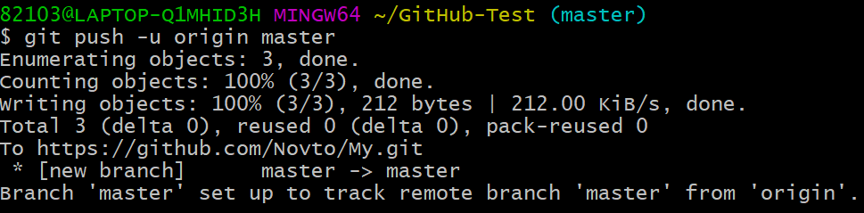
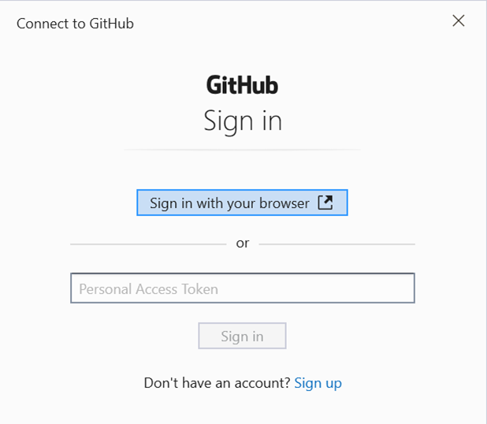
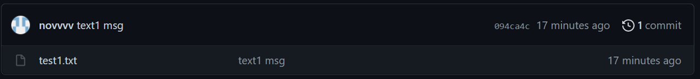
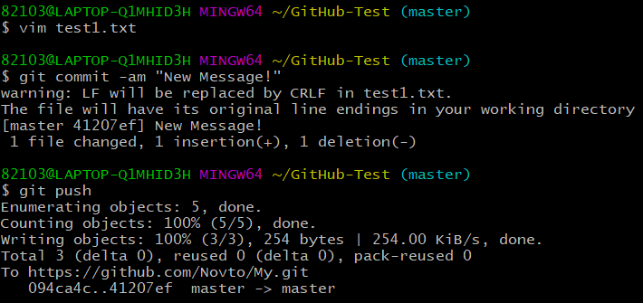
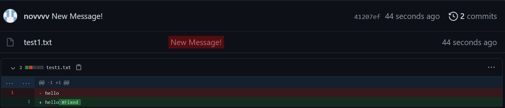
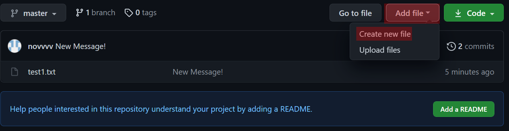
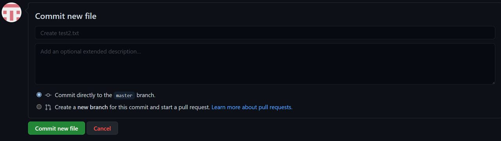
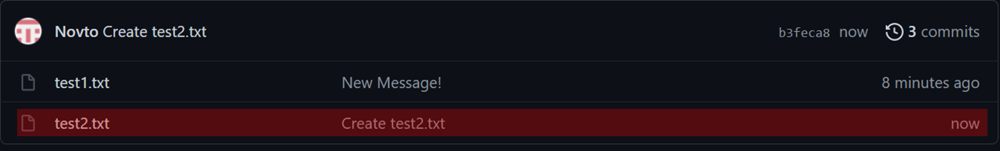
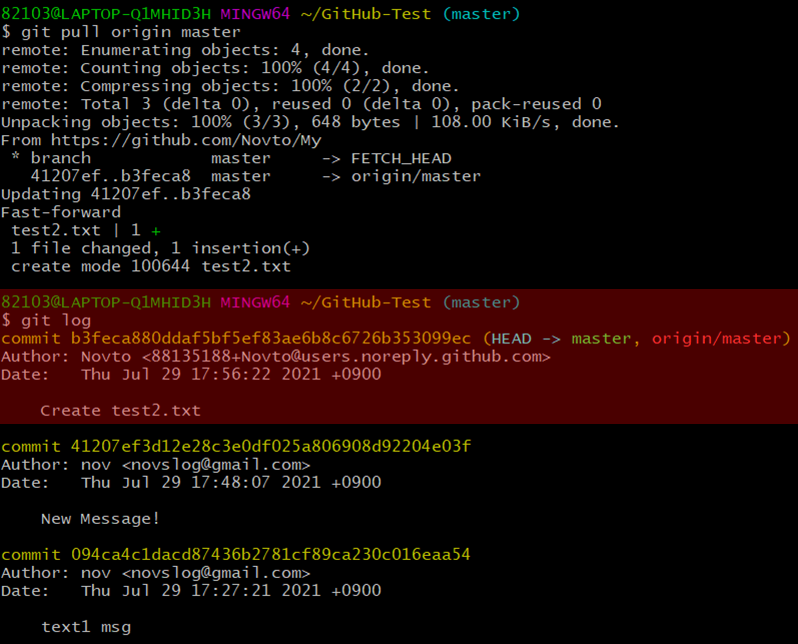

* 다음 포스팅은 깃허브(GitHub)의 사용방법에 대하여 정리한 것으로, 개인적인 공부 기록용으로 작성한 글 이기에 잘못된 내용을 포함하고 있을 수 있습니다.
* Git 관련 내용에 대한 이해가 부족하신 분은 Git 카테고리의 글을 먼저 읽고 GitHub 포스팅을 읽어 주세요.
[목차]
#1 깃허브에 파일 올리기 : git push
- 1.1 깃허브에서 직접 커밋하기
#2 깃허브에서 파일 내려받기 : git pull
[목표]
- 깃허브(GitHub) 원격 저장소에 파일을 올리고, 내려 받는 방법에 대해 이해한다.
#1 깃허브에 파일 올리기 : git push
지역 저장소 (내 컴퓨터) 의 파일을 원격 저장소 (Git Hub) 에 올리는 것을 "푸시(Push)" 라고 한다.
다음 명령을 CLI 창에 입력해 보자.
$ git push -u origin master
지역 저장소의 브랜치 (origin) 을 원격 저장소의 브랜치 (master) 로 푸시 하라는 의미이다.
'-u' 옵션은 지역 저장소의 브랜치를 원격 저장소의 브랜치와 연결하기 위한 것으로 처음 한 번만 사용하면 된다.

명령을 실행하면 , 로그인 하라는 창이 뜰텐데 로그인하면 된다.

깃허브 저장소로 가보면 , GitHub #1 에서 실습했던, test1.txt 파일이 성공적으로 커밋 되었음을 확인 가능하다.

한 번이라도 저장소를 연결 했다면 다음 부터는 git push 명령 만으로 깃허브 저장소에 커밋이 가능하다. test1.txt 파일을 적당히 수정해 주고, 커밋한 뒤 푸시 해보자.
$ vim test1.txt // test1.txt 파일 수정
$ git commit -am "New Message!" // add & commit
$ git push // 깃허브 저장소로 push
수정한 내용과 커밋 메시지가 성공적으로 깃허브에 업로드 되었다.

-1.1 깃허브에서 직접 커밋하기
깃허브 원격 저장소에서 직접 커밋 하는 것 또한 물론 가능하다. 저장소로 들어가서 우측 상단의 [Add file]을 클릭하고, [Create new file]을 클릭한다.

커밋 메시지는 자동으로 작성 되는데 , 원한다면 수정도 가능하다. [Commit new file]을 클릭해 준다.

저장소를 새로고침 해보면, 깃허브 저장소에서 직접 커밋한 test2.txt 파일이 올라가 있다.

#2 깃허브에서 파일 내려받기 : git pull
원격 저장소 (Git Hub)에 있는 코드를 지역 저장소 (내 컴퓨터)로 가져오는 과정을 "풀(Pull)" 이라고 한다.1.1에서 깃허브에서 직접 커밋한 test2.txt 파일은 내 컴퓨터에 존재하지 않을 것이다. 연습으로 test2.txt 파일을 풀(pull) 해보자.다음 명령어를 차례로 입력해 보자.
$ git pull origin master // 원격 저장소에서 master 브랜치로 pull 한다.
$ git log // 로그를 출력한다.
로그를 출력해 보니, text2.txt 파일이 지역 저장소로 성공적으로 가져왔음을 확인 가능하다.
